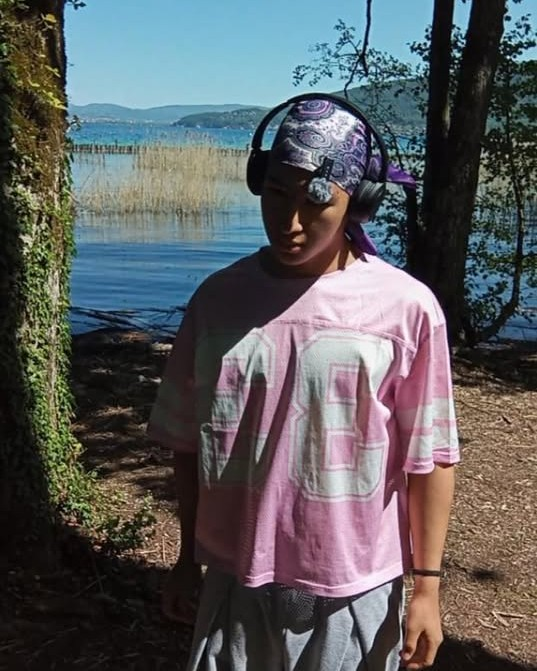

◆ Qui je suis
Santamaria Sanchéz
Fondateur d’EP Coaching. J’accompagne des personnes qui veulent progresser en musculation, et des coachs qui veulent structurer leur activité.
Je suis athlète naturel, objectif Heroes Cup WNBF France en Classic Physique. Je m’applique à moi-même ce que je transmets. Ce que je sais, je l’ai appris en le faisant, et je continue à l’apprendre.
Mon approche tient en une chose : je prends les gens motivés, et je fais en sorte qu’ils aillent plus vite que s’ils étaient seuls.
- Fondateur EP Coaching
- Coach en musculation et nutrition
- Athlète naturel WNBF
◆ Avant de commencer
Est-ce que c’est fait pour toi ?
Cette plateforme est faite pour les coachs qui veulent avancer sérieusement. Voilà les trois choses que je regarde.
Tu veux scaler, sans savoir par où
Ton activité tourne ou démarre, mais tu ne sais pas quoi faire précisément pour passer au niveau au-dessus.
Tu es prêt à bosser
Tu cherches des outils et un cadre pour aller plus vite, pas une solution qui travaille à ta place.
Tu as un objectif business clair
Passer à un certain nombre de clients, structurer ton offre, arrêter de tout gérer à la main. Tu sais ce que tu veux atteindre.
◆ La méthode
Un accompagnement 1-to-1 personnalisé
Chaque activité de coaching a ses blocages. Le tien n’est pas forcément celui du voisin. On regarde où tu en es, et on construit à partir de là.
Le but n’est pas de te donner cinquante choses à faire de plus, c’est que tu saches quoi changer en premier, et pourquoi.
On fait le point
Ton offre, tes clients, ton organisation, tes chiffres. Ce qui te fait perdre du temps et ce qui te fait perdre de l’argent.
On construit ton plan
Ce que tu changes, dans quel ordre, avec quels outils. Des priorités claires plutôt qu’une liste de cinquante choses à faire.
On ajuste en continu
Tes chiffres évoluent, ton organisation aussi. On corrige en cours de route.
◆ Ce qui est inclus
Tout ce dont tu as besoin pour gérer tes clients
◆ Pilier prioritaire
Tous les outils clients, à ta main
Suivi, programmes d’entraînement, nutrition, logbook. Tes clients utilisent la plateforme sous ta marque, tu pilotes tout depuis ton espace.
Espace de création de contenu
Crée tes formations et tes programmes directement dans la plateforme, et rends-les accessibles à tes clients.
◆ Pilier prioritaire
Cloisonnement total
Tes clients sont les tiens. Aucun autre coach de la plateforme n’y a accès, ni à leurs données, ni à leur existence.
Dashboard business
MRR estimé, nombre de clients actifs, évolution. Tes chiffres au même endroit, pour piloter avec des données plutôt qu’au feeling.
Formations incluses
Bodybuilding, nutrition, training, business et psychologie. Un fonds de contenu qui s’enrichit au fil des mois, utilisable directement avec tes clients sans avoir à le produire toi-même.
Communication centralisée
Messagerie clients, mails et notifications au même endroit. Tu arrêtes de jongler entre plusieurs outils pour suivre une conversation.
Ce que tu vas pouvoir accomplir
- Gérer plus de clients Sans que le suivi de chacun te prenne trois fois plus de temps.
- Piloter avec tes chiffres Savoir où tu en es vraiment, et décider en conséquence.
- Récupérer du temps Moins d’administratif et de gestion manuelle, plus de temps sur le coaching et l’acquisition.
Prêt à passer au niveau supérieur ?
Réponds à quelques questions, puis réserve ton appel. On fait le point sur ton activité et on voit comment la plateforme peut s’y intégrer.